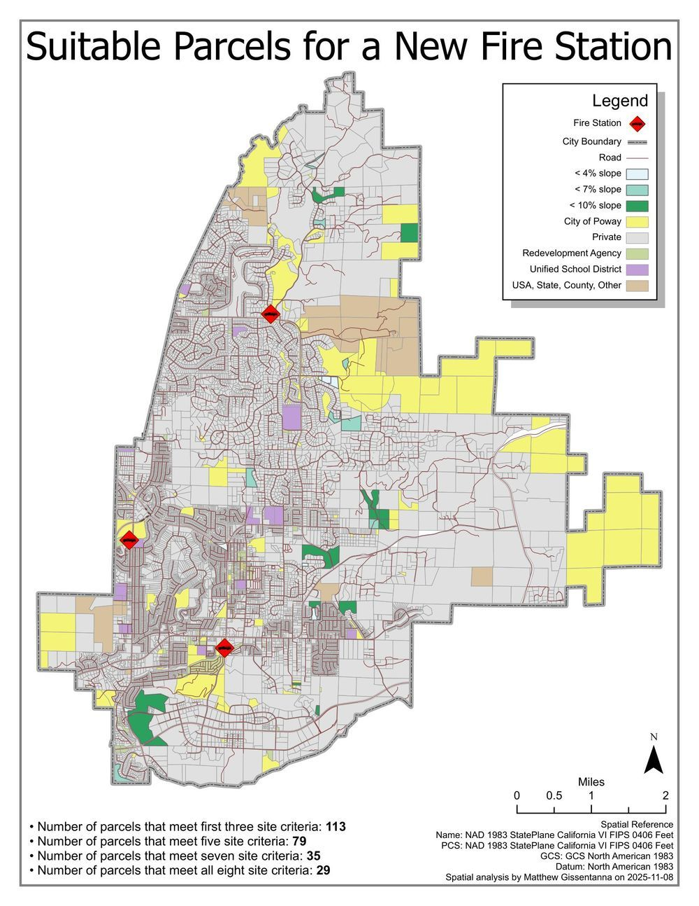

Poway Fire Station Siting Analysis
POWAY-2025-11 · Delivered

Overview
Suitability model identifying buildable parcels for a new fire station within Poway city limits. Eight site criteria (slope, road access, ownership, zoning, etc.) progressively narrow the candidate set. The funnel exposes the trade-offs between strict criteria and viable site count.
Processing
SoftwareArcGIS Pro
Coordinate Reference Systems
- Horizontal
- NAD 1983 StatePlane California VI FIPS 0406 Feet
Methods
- Slope raster derivation, reclassified at <4% / <7% / <10% thresholds
- Parcel attribute filtering by ownership type and zoning
- Stacked criteria intersection: 8 layers applied incrementally
Deliverables
- Suitability map with criteria funnel (PDF)